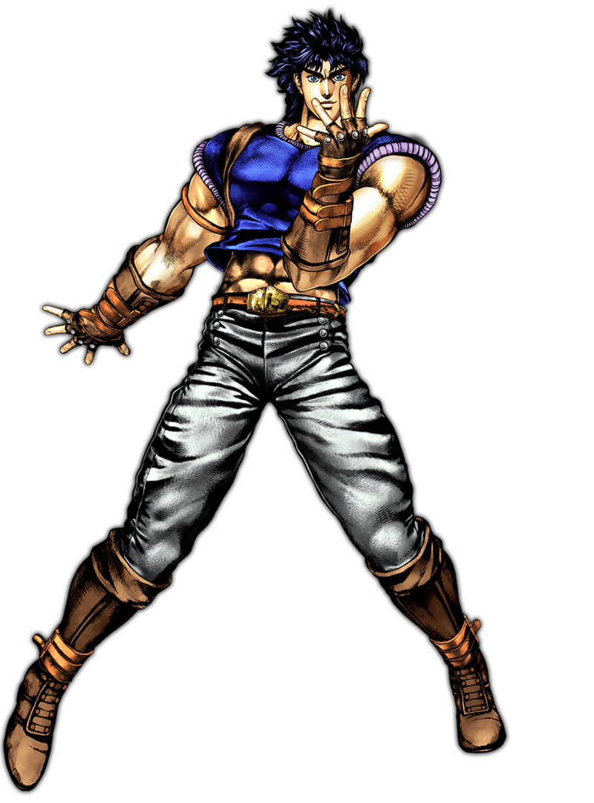
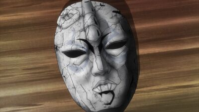
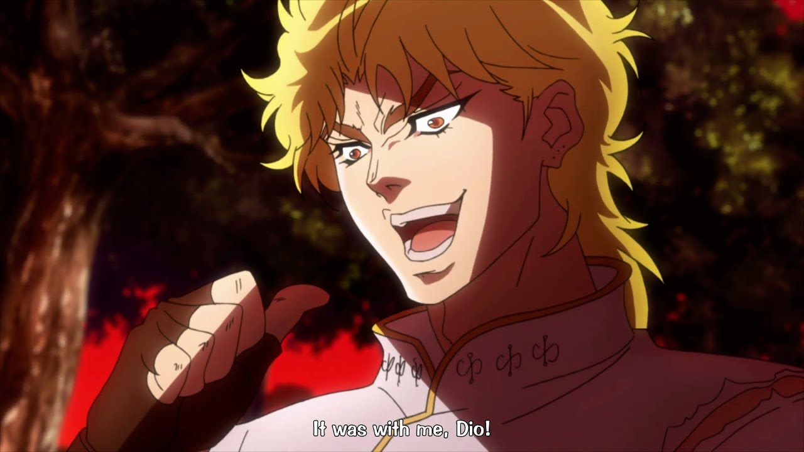
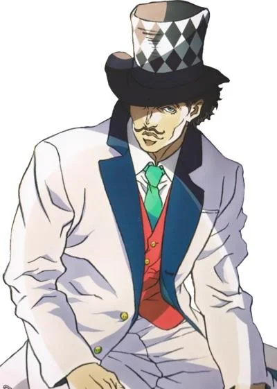
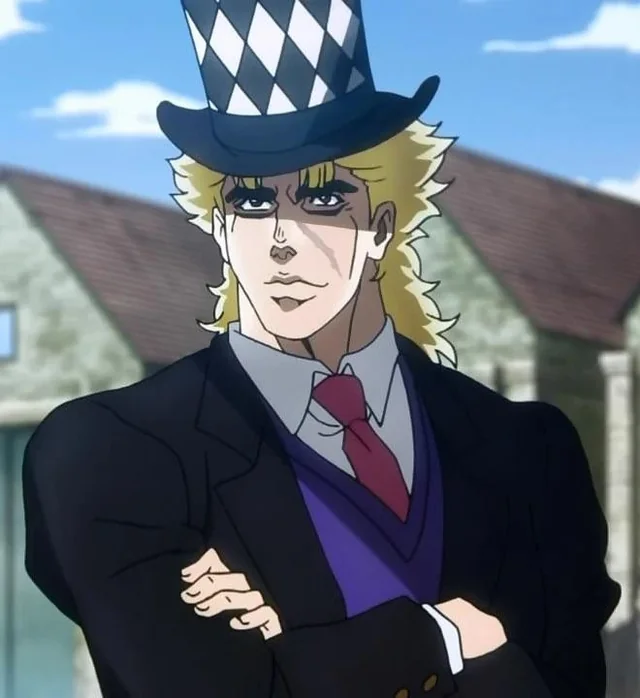

| Opening | Ending |
|---|---|
| Sono Chi no Sadame | Roundabout |
Partie 1 - Phantom Blood

Explication de la partie
Dans cette Partie, l'histoire se déroule en Angleterre, entre le milieu et la fin des années 1880.
On suit Jonathan Joestar, l'héritier de la riche famille Joestar, et son frère adoptif Dio Brando , qui convoite leur fortune.
À l'aide d'un ancien masque de pierre, Dio se transforme en vampire, et Jonathan apprend le Hamon (l'Onde en français), une technique martiale basée sur la lumière du soleil, pour combattre Dio.
Protagoniste - Jonathan Joestar
Jonathan Joestar est le 1er protagoniste de Jojo's Bizzare Adventure.
En deux mots, Jonathan vivait une vie paisible jusqu'a l'arrivée de son frère adoptif, Dio. Ce dernier avait envie de tuer Jonathan et donc fait recourt au Masque de Pierre pour se transformer en Vampire.
Etant donné que les vampires craignent la lumière du soleil et qu'ils n'ont aucune autre faiblaisse, Jonathan se fait prendre sous l'aile de Will Anthonio Zeppeli, qui maitrise le Hamon.
Après quelques années d'entrainement, Jonathan maistrise le Hamon et va battre Dio dans son manoir où il lui coupera la tête.
Quelques années après Dio fera sn grand retour dans le bateau que Jonathan prendra pour aller en lune de miel avec sa femme Erina.
Malheureusement Jonathan se sacrifiera en restant sur le bateau en feu en gardant la la tête de Dio avec lui pour que Erina et un bébé puissent s'enfuire dans le cerceuil où était cacher Dio.

Scène où Jonathan se sacrifie dans le bateau en gardant la tête de Dio :

Antagoniste - Dio Brando
A la mort de son père, Dio Brando se fait adopter par les Joestar (George Joestar, père de Jonathan, a fait une chute en calèche et a dévalé une montagne. Le père de Dio, qui voulait aller voler les affaires de George passa près de ce dernier.
George le pris pour un médecin et lui dit qu'il lui devait la vie et il prendra volontiers son fils en adoption si le père de Dio parvenait à mourir).
Dio a donc rejoint la famille Joestar pour seul et unique but de la tuer et de prendre posession du Masque de pierre :

Dio commence donc des recherches pour savoir comment fonctionne ce masque et se rend compte qu'il doit verser une goutte de sang. Dio tue donc George Joestar pour mettre du sang sur son masque en l'ayant sur sa tête. Il se transforme en vampire et brûle la maison tout en se battant avec Jonathan (qui ne maîtrise pas encore le Hamon)

Alliés - Will Anthonio Zeppeli, Speedwagon
Dans Jojo, il y a des personnes que l'on surnome les Jobros. Ils accompagnent durant toute la partie les protagonistes et sont, très souvent les meilleurs amis des protagonsites.
Will Anthonio Zeppeli est la personne qui a appris le Hamon a Jonathan:

Speedwagon est celui qui a créée l'association Speedwagon qui est présente pendant toute l'histoire est c'est lui, le Jobro de Jonathan
